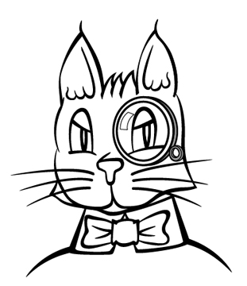
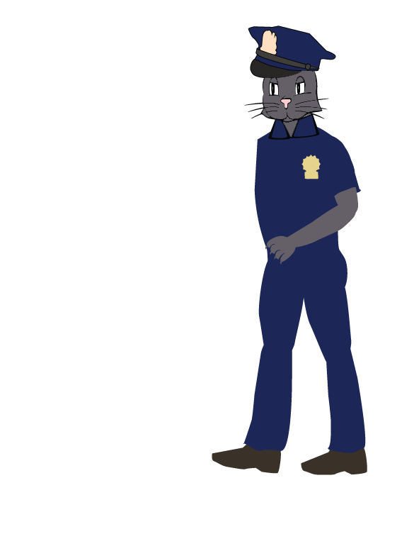

Meow St Journal
Top Ten Meow St Fat Cat

1. Morgan Diamond
The chairman of Diamond Financial, Inc is undoubtably Meow St's King. He's ruthless, aggressive, and some may even say criminal. But he has a wealth of riches to show for it.
continued from page 2

All the Top Fat Cats in the city are constantly clawing at one another in order to make it to the top. In today's issue, we profile those felines that have succeeded in making the ascent to riches and wealth, no matter the obstacles, physical, social, moral or otherwise.

Meow Street Journal
Top Cat Morgan Diamond JAILED! Bail Denied!
Arrested for Catnip-Backed Securities Fraud
On the same day as Morgan Diamond was named Meow Street's most profitable Fat Cat, the MSPD snapped him up and charged him with Securities Fraud: specifically, Catnip-Backed Securities Fraud. Diamond is alleged to have defrauded investors who poured millions inot complex instruments backed by the commodity catnip.Diamond's lawyer, Fluffy Perkins, a partner at Kitty Livy, LLP, stated that "my cliend, Mr. Diamond, is innocent of all charges. We will fight to clear Mr. Diamond's name and get him back to business."
Mr. Diamond faces up to forty years in prison if convicted.